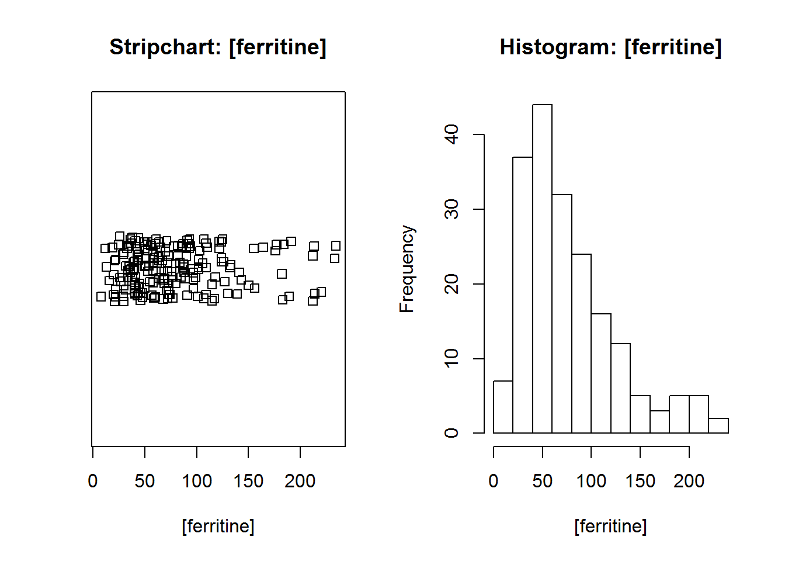

On souhaite dans un premier temps decrire et observer nos donnees pour mieux les comprendre.
Nous utiliserons le jeux de donnees ‘ais’, inclus dans le package “DAAG”.
(Pensez a telecharger le package une premiere fois via: install.package(“DAAG”)).
Ce jeux de donnees contient des resultats d’analyses sanguines et des caracteristiques anthropometriques pour plus de 200 athletes australiens. Plus de details ICI.
A cette bdd on remplacera certaines donnees par des valeurs manquantes pour apprendre a les reperer et les gerer efficacemment.
require(DAAG)
data(ais)
ais_NA<- ais #creation de ais_NA qui est une bdd identique a ais.
#on ajoute des donnees manquantes aleatoirement pour la variable ferr et sport.
ais_NA$ferr[sample(1:length(ais_NA$ferr),10)]<- NA
ais_NA$sport[sample(1:length(ais_NA$sport),10)]<- NAPour se faire une idee du jeux de donnee, une description de la distribution de ses variables est importante.
- En univarie
On peut chercher a connaitre l’effectif, la tendance centrale (moyenne, medianne, mode) ainsi que la dispersion (ecart-type / variance, l’etendue des donnees, ses quantiles).
La fonction summarise(), permet d’obtenir la majorite de ces indicateurs.
D’autres fonctions permettent de les obtenir plus selectivement, un a un. Dans ce cas la, il faudra preciser la facon de gerer les donnees manquantes. Par defaut R stop le calcul et renvoie une erreur presence de valeurs manquantes.
Dans le cas d’une variable qualitative, on remarquera et on gardera bien en tete que part defaut les donnees manquantes ne sont pas signalees.
#Dans le cas d'une variable quantitative.
summary(ais_NA$ferr) #la derniere colonne denombre les donnees manquantes pour cette variable.## Min. 1st Qu. Median Mean 3rd Qu. Max. NA's
## 8.00 41.00 64.00 75.96 97.00 234.00 10table(is.na(ais_NA$ferr)) #is.na() = la valeur est elle manquante ? / permet d'obtenir les effectifs##
## FALSE TRUE
## 192 10summary(ais_NA) #produit un resume de toutes les variables de la bdd
mean(ais_NA$ferr,na.rm=TRUE) #na.rm = NA remove, l'argument est parametre par defaut sur FALSE et stop le calcul.
sd(ais_NA$ferr,na.rm=TRUE)
range(ais_NA$ferr,na.rm=TRUE)
quantile(ais_NA$ferr,na.rm=TRUE)#Dans le cas d'une variable qualitative.
table(ais_NA$sport, useNA = "always") #useNA: doit on inclure les donnees manquantes "always" !##
## B_Ball Field Gym Netball Row Swim T_400m T_Sprnt Tennis
## 24 17 4 23 34 22 28 15 10
## W_Polo <NA>
## 15 10- En bivarie
On peut egalement realiser une analyse bivariee, c-a-d decrire la distribution d’une variable selon differents groupes.
#Dans le cas d'une variable quantitative.
tapply(ais_NA$ferr, #la variable que l'on souhaite decrire
ais_NA$sex, #en fonction de cette categories
summary) #utiliser cette fonction de description## $f
## Min. 1st Qu. Median Mean 3rd Qu. Max. NA's
## 12.00 36.00 50.00 56.77 71.00 182.00 3
##
## $m
## Min. 1st Qu. Median Mean 3rd Qu. Max. NA's
## 8.00 53.00 87.00 95.55 120.00 234.00 7#Dans le cas d'une variable qualitative
table(ais_NA$sport, ais_NA$sex, useNA = "always")##
## f m <NA>
## B_Ball 12 12 0
## Field 6 11 0
## Gym 4 0 0
## Netball 23 0 0
## Row 19 15 0
## Swim 9 13 0
## T_400m 11 17 0
## T_Sprnt 4 11 0
## Tennis 7 3 0
## W_Polo 0 15 0
## <NA> 5 5 0R est un outil efficace pour visualiser ses donnees. Les fonctions de base permettent de realiser de nombreux graphiques. Neanmoins plusieurs packages populaires (ggplot2, lattice), non vu ici, sont frequemment utilises pour etendre ces fonctionnalites.
Parmi les fonctions de bases la fonction plot() permet de produire divers graphiques selon l’arguments specifies.
R determine la nature des donnees entrees en argument et produit un graphique en consequence.
Si on souhaite voir un type de graphique en particulier (histogramme, boxplot, stripchart) on peut utiliser la fonction dediee a ce type particulier de graphique.
#Graphiques simples
plot(ais_NA$ferr) #univarie
plot(ais_NA$bmi, ais_NA$ferr) #bivarie#En specifiant plusieurs arguments utiles
{plot(ais_NA$bmi, ais_NA$ferr, #formule
col=ais_NA$sex, #couleurs des symboles en fonction d'une autre variable
pch=16, #motif du symbole
cex=1.5, #taille des symboles
xlab="IMC", ylab="Concentration en ferritine", #nom des axes
main="Taux de concentration en ferritine en fonction de l'IMC.") #titre principal
abline(h=mean(ais_NA$ferr, na.rm=T) , lty="dotted", col="blue") #rajouter une ligne horizontale representant la moyenne de la concentration en ferritine
abline(v=mean(ais_NA$bmi, na.rm=T) , lty="dotted", col="blue") #rajouter une ligne verticale representant la moyenne de l'IMC
legend("topright", #ou souhaite t'on faire apparaitre la legende
legend=c("Femme", "Homme"), #quels sont les etiquettes a rattacher a la legende
pch=16, #le symbole a afficher
col=unique(ais_NA$sex) #quels sont les couleurs definies
)
}{
par(mfrow=c(1,2)) #permet d'afficher plusieurs graphiques sur une meme page,
stripchart(ais_NA$ferr, method="jitter", main= "Stripchart: [ferritine]",xlab = "[ferritine]")
hist(ais_NA$ferr, main="Histogram: [ferritine]", xlab = "[ferritine]")}
{
par(mfrow=c(1,1))
boxplot(ais_NA$ferr ~ ais_NA$sport, main="Boxplot: [ferritine] en fonction du sport")
}Pour s’entrainer.
Synthese des fonctions
| Fonction | Description |
|---|---|
| summary() | fournit des statistiques descriptive sur l’objet |
| table(, useNA= “always”) | tableau de contingence |
| is.na() | TRUE si l’element est NA, FALSE si non |
| mean(, na.rm=T) | moyenne du vecteur |
| sd( , na.rm=T) | ecart-type du vecteur |
| range( , na.rm=T) | valeur minimale et maximale du vecteur |
| quantile( , na.rm=TRUE) | quantile du vecteur |
| plot() | fonction generique pour produire un graphique |
| abline() | ajouter une droite a un graphique |
| stripchart() | produire un stripchart |
| hist() | produire un histogramme |
| boxplot() | produire une boite a moustaches |